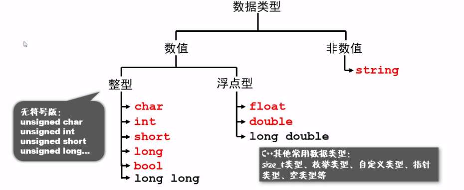

变量概念
变量：是程序可操作的存储区的名称。变量类型：每个变量都有指定的类型，类型决定了变量存储的大小和布局，该范围内的值都可以存储在内存中，运算符可应用于变量上。变量定义：告诉编译器在何处创建变量的存储，以及如何创建变量的存储。变量定义指定一个数据类型，并包含了该类型的一个或多个变量的列表。变量声明：
type variable_list;
type variable_name = value;
常量就像是常规的变量，只不过常量的值在定义后不能进行修改。
变量的作用域：局部、形式、全局
定义常量： 语法：#define identifier value
举例：#define LENGTH 10 语法：const type variable = value;
举例：const int LENGTH = 10;
输入输出: cin >> num;
cout << num << endl;
运算符：是一种告诉编译器执行特定的数学或逻辑操作的符号
命名规则
- 由 数字、字母和下划线 组成
- 不可以用下划线开头
- 不要使用拼音
- 尽量不要使用单个英文单词
- 提倡使用有正式含义的英文单词
内置类型
C++ 为程序员提供了种类丰富的内置数据类型和用户自定义的数据类型。下表列出了七种基本的 C++ 数据类型：
| 类型 | 关键字 |
|---|---|
| 布尔型 | bool |
| 字符型 | char |
| 整型 | int |
| 浮点型 | float |
| 双浮点型 | double |
| 无类型 | void |
| 宽字符型 | wchar_t |
其实 wchar_t 是这样来的：
typedef short int wchar_t; |
所以 wchar_t 实际上的空间是和 short int 一样。
一些基本类型可以使用一个或多个类型修饰符进行修饰：
- signed
- unsigned
- short
- long
下表显示了各种变量类型在内存中存储值时需要占用的内存，以及该类型的变量所能存储的最大值和最小值。
注意：不同系统会有所差异，一字节为 8 位。
注意：long int 与 int 都是 4 个字节，因为早期的 C 编译器定义了 long int 占用 4 个字节，int 占用 2 个字节，新版的C/C++ 标准兼容了早期的这一设定。
| 类型 | 位 | 范围 |
|---|---|---|
| char | 1 个字节 | -128 到 127 或者 0 到 255 |
| unsigned char | 1 个字节 | 0 到 255 |
| signed char | 1 个字节 | -128 到 127 |
| int | 4 个字节 | -2147483648 到 2147483647 |
| unsigned int | 4 个字节 | 0 到 4294967295 |
| signed int | 4 个字节 | -2147483648 到 2147483647 |
| short int | 2 个字节 | -32768 到 32767 |
| unsigned short int | 2 个字节 | 0 到 65,535 |
| signed short int | 2 个字节 | -32768 到 32767 |
| long int | 8 个字节 | -9,223,372,036,854,775,808 到 9,223,372,036,854,775,807 |
| signed long int | 8 个字节 | -9,223,372,036,854,775,808 到 9,223,372,036,854,775,807 |
| unsigned long int | 8 个字节 | 0 到 18,446,744,073,709,551,615 |
| float | 4 个字节 | 精度型占4个字节（32位）内存空间，+/- 3.4e +/- 38 (~7 个数字) |
| double | 8 个字节 | 双精度型占8 个字节（64位）内存空间，+/- 1.7e +/- 308 (~15 个数字) |
| long double | 16 个字节 | 长双精度型 16 个字节（128位）内存空间，可提供18-19位有效数字。 |
| wchar_t | 2 或 4 个字节 | 1 个宽字符 |
从上表可得知，变量的大小会根据编译器和所使用的电脑而有所不同。

变量设置
变量类型
变量其实只不过是程序可操作的存储区的名称。C++ 中每个变量都有指定的类型，类型决定了变量存储的大小和布局，该范围内的值都可以存储在内存中，运算符可应用于变量上。
变量的名称可以由字母、数字和下划线字符组成。它必须以字母或下划线开头。大写字母和小写字母是不同的，因为 C++ 是大小写敏感的。
基于前一章讲解的基本类型，有以下几种基本的变量类型：
| 类型 | 描述 |
|---|---|
| bool | 存储值 true 或 false。 |
| char | 通常是一个字符（八位）。这是一个整数类型。 |
| int | 对机器而言，整数的最自然的大小。 |
| float | 单精度浮点值。单精度是这样的格式，1位符号，8位指数，23位小数。 |
| double | 双精度浮点值。双精度是1位符号，11位指数，52位小数。 |
| void | 表示类型的缺失。 |
| wchar_t | 宽字符类型。 |
C++ 也允许定义各种其他类型的变量，比如枚举、指针、数组、引用、数据结构、类等等，这将会在后续的章节中进行讲解。
下面我们将讲解如何定义、声明和使用各种类型的变量。
变量定义
变量定义就是告诉编译器在何处创建变量的存储，以及如何创建变量的存储。变量定义指定一个数据类型，并包含了该类型的一个或多个变量的列表，如下所示：
type variable_list; |
- type 必须是一个有效的 C++ 数据类型，可以是 char、wchar_t、int、float、double、bool 或任何用户自定义的对象。
- variable_list 可以由一个或多个标识符名称组成，多个标识符之间用逗号分隔。
变量可以在声明的时候被初始化（指定一个初始值）。初始化器由一个等号，后跟一个常量表达式组成，如下所示：
type variable_name = value; |
下面列举几个实例：
| 声明与使用 | 举例 |
|---|---|
| 声明整型变量 | int score_totle; //声明变量score_totle为整型int salary = 2500; //声明变量score_totle为整型并初始化int salary1 = 10,salary2 = 20; //同时声明两个整型并初始化 |
| 声明浮点型变量 | |
| 打印整型变量 | cout << "xiaomimg's salary is :" << salary << endl; |
变量在头部就已经被声明，但它们是在主函数内被定义和初始化的：
|
当上面的代码被编译和执行时，它会产生下列结果：
30 |
同样的，在函数声明时，提供一个函数名，而函数的实际定义则可以在任何地方进行。例如：
// 函数声明 int func(); int main() { // 函数调用 int i = func(); } // 函数定义 int func() { return 0; }
左值右值
C++ 中有两种类型的表达式：
- 左值（lvalue）：指向内存位置的表达式被称为左值（lvalue）表达式。左值可以出现在赋值号的左边或右边。
- 右值（rvalue）：术语右值（rvalue）指的是存储在内存中某些地址的数值。右值是不能对其进行赋值的表达式，也就是说，右值可以出现在赋值号的右边，但不能出现在赋值号的左边。
变量是左值，因此可以出现在赋值号的左边。数值型的字面值是右值，因此不能被赋值，不能出现在赋值号的左边。下面是一个有效的语句：
int g = 20; |
但是下面这个就不是一个有效的语句，会生成编译时错误：
10 = 20; |
变量分类
变量作用域局部、形式、全局
作用域是程序的一个区域，一般来说有三个地方可以定义变量：
- 在函数或一个代码块内部声明的变量，称为局部变量。
- 在函数参数的定义中声明的变量，称为形式参数。
- 在所有函数外部声明的变量，称为全局变量。
局部变量
在函数或一个代码块内部声明的变量，称为局部变量。它们只能被函数内部或者代码块内部的语句使用。
全局变量
在所有函数外部定义的变量（通常是在程序的头部），称为全局变量。全局变量的值在程序的整个生命周期内都是有效的。
全局变量可以被任何函数访问。也就是说，全局变量一旦声明，在整个程序中都是可用的。
在程序中，局部变量和全局变量的名称可以相同，但是在函数内，局部变量的值会覆盖全局变量的值。
初始变量
定义局局变量时，系统不会对其初始化，必须自行对其初始化。
定义全局变量时，系统会自动初始化为下列值：
| 数据类型 | 初始化默认值 |
|---|---|
| int | 0 |
| char | ‘\0’ |
| float | 0 |
| double | 0 |
| pointer | NULL |
正确地初始化变量是一个良好的编程习惯，否则有时候程序可能会产生意想不到的结果。
常量
常量是固定值，在程序执行期间不会改变。这些固定的值，又叫做字面量。
常量可以是任何的基本数据类型，可分为整型数字、浮点数字、字符、字符串和布尔值。
常量就像是常规的变量，只不过常量的值在定义后不能进行修改。
整数常量
整数常量可以是十进制、八进制或十六进制的常量。前缀指定基数：0x 或 0X 表示十六进制，0 表示八进制，不带前缀则默认表示十进制。
整数常量也可以带一个后缀，后缀是 U 和 L 的组合，U 表示无符号整数（unsigned），L 表示长整数（long）。后缀可以是大写，也可以是小写，U 和 L 的顺序任意。
212 // 合法的 |
以下是各种类型的整数常量的实例:
85 // 十进制 |
浮点常量
浮点常量由整数部分、小数点、小数部分和指数部分组成。您可以使用小数形式或者指数形式来表示浮点常量。
当使用小数形式表示时，必须包含整数部分、小数部分，或同时包含两者。当使用指数形式表示时， 必须包含小数点、指数，或同时包含两者。带符号的指数是用 e 或 E 引入的。
下面列举几个浮点常量的实例:
3.14159 // 合法的 |
布尔常量
布尔常量共有两个，它们都是标准的 C++ 关键字：
- true 值代表真。
- false 值代表假。
我们不应把 true 的值看成 1，把 false 的值看成 0。
字符常量
字符常量是括在单引号中。如果常量以 L（仅当大写时）开头，则表示它是一个宽字符常量（例如 L’x’），此时它必须存储在 wchar_t 类型的变量中。否则，它就是一个窄字符常量（例如 ‘x’），此时它可以存储在 char 类型的简单变量中。
字符常量可以是一个普通的字符（例如 ‘x’）、一个转义序列（例如 ‘\t’），或一个通用的字符（例如 ‘\u02C0’）。
在 C++ 中，有一些特定的字符，当它们前面有反斜杠时，它们就具有特殊的含义，被用来表示如换行符（\n）或制表符（\t）等。下表列出了一些这样的转义序列码：
| 转义序列 | 含义 |
|---|---|
| \ | \ 字符 |
| \’ | ‘ 字符 |
| \” | “ 字符 |
| \? | ? 字符 |
| \a | 警报铃声 |
| \b | 退格键 |
| \f | 换页符 |
| \n | 换行符 |
| \r | 回车 |
| \t | 水平制表符 |
| \v | 垂直制表符 |
| \ooo | 一到三位的八进制数 |
| \xhh . . . | 一个或多个数字的十六进制数 |
下面的实例显示了一些转义序列字符：
|
字符串常量
字符串字面值或常量是括在双引号 “” 中的。一个字符串包含类似于字符常量的字符：普通的字符、转义序列和通用的字符。
您可以使用空格做分隔符，把一个很长的字符串常量进行分行。
下面的实例显示了一些字符串常量。下面这三种形式所显示的字符串是相同的。
"hello, dear" |
定义常量
在 C++ 中，有两种简单的定义常量的方式：
- 使用 #define 预处理器。
- 使用 const 关键字。
语法：#define identifier value |
请注意，把常量定义为大写字母形式，是一个很好的编程实践。
类型限定符
类型限定符提供了变量的额外信息。
| 限定符 | 含义 |
|---|---|
| const | const 类型的对象在程序执行期间不能被修改改变。 |
| volatile | 修饰符 volatile 告诉编译器不需要优化volatile声明的变量，让程序可以直接从内存中读取变量。对于一般的变量编译器会对变量进行优化，将内存中的变量值放在寄存器中以加快读写效率。 |
| restrict | 由 restrict 修饰的指针是唯一一种访问它所指向的对象的方式。只有 C99 增加了新的类型限定符 restrict。 |
存储类
存储类定义 C++ 程序中变量/函数的范围（可见性）和生命周期。这些说明符放置在它们所修饰的类型之前。下面列出 C++ 程序中可用的存储类：
- auto
- register
- static
- extern
- mutable
- thread_local (C++11)
从 C++ 17 开始，auto 关键字不再是 C++ 存储类说明符，且 register 关键字被弃用。
auto 存储类
自 C++ 11 以来，auto 关键字用于两种情况：声明变量时根据初始化表达式自动推断该变量的类型、声明函数时函数返回值的占位符。
C++98标准中auto关键字用于自动变量的声明，但由于使用极少且多余，在C++11中已删除这一用法。
根据初始化表达式自动推断被声明的变量的类型，如：
auto f=3.14; //double |
register 存储类
register 存储类用于定义存储在寄存器中而不是 RAM 中的局部变量。这意味着变量的最大尺寸等于寄存器的大小（通常是一个词），且不能对它应用一元的 ‘&’ 运算符（因为它没有内存位置）。
{ |
寄存器只用于需要快速访问的变量，比如计数器。还应注意的是，定义 ‘register’ 并不意味着变量将被存储在寄存器中，它意味着变量可能存储在寄存器中，这取决于硬件和实现的限制。
static 存储类
static 存储类指示编译器在程序的生命周期内保持局部变量的存在，而不需要在每次它进入和离开作用域时进行创建和销毁。因此，使用 static 修饰局部变量可以在函数调用之间保持局部变量的值。
static 修饰符也可以应用于全局变量。当 static 修饰全局变量时，会使变量的作用域限制在声明它的文件内。
在 C++ 中，当 static 用在类数据成员上时，会导致仅有一个该成员的副本被类的所有对象共享。
|
当上面的代码被编译和执行时，它会产生下列结果：
变量 i 为 6 , 变量 count 为 9 |
extern 存储类
extern 存储类用于提供一个全局变量的引用，全局变量对所有的程序文件都是可见的。当您使用 ‘extern’ 时，对于无法初始化的变量，会把变量名指向一个之前定义过的存储位置。
当您有多个文件且定义了一个可以在其他文件中使用的全局变量或函数时，可以在其他文件中使用 extern 来得到已定义的变量或函数的引用。可以这么理解，extern 是用来在另一个文件中声明一个全局变量或函数。
extern 修饰符通常用于当有两个或多个文件共享相同的全局变量或函数的时候，如下所示：
第一个文件：main.cpp
|
第二个文件：support.cpp
|
在这里，第二个文件中的 extern 关键字用于声明已经在第一个文件 main.cpp 中定义的 count。现在 ，编译这两个文件，如下所示：
$ g++ main.cpp support.cpp -o write |
这会产生 write 可执行程序，尝试执行 write，它会产生下列结果：
$ ./write |
mutable 存储类
mutable 说明符仅适用于类的对象，这将在本教程的最后进行讲解。它允许对象的成员替代常量。也就是说，mutable 成员可以通过 const 成员函数修改。
thread_local 存储类
使用 thread_local 说明符声明的变量仅可在它在其上创建的线程上访问。 变量在创建线程时创建，并在销毁线程时销毁。 每个线程都有其自己的变量副本。
thread_local 说明符可以与 static 或 extern 合并。
可以将 thread_local 仅应用于数据声明和定义，thread_local 不能用于函数声明或定义。
以下演示了可以被声明为 thread_local 的变量：
thread_local int x; // 命名空间下的全局变量 |
输入输出
C++ 标准库提供了一组丰富的输入/输出功能，我们将在后续的章节进行介绍。本章将讨论 C++ 编程中最基本和最常见的 I/O 操作。
C++ 的 I/O 发生在流中，流是字节序列。如果字节流是从设备（如键盘、磁盘驱动器、网络连接等）流向内存，这叫做输入操作。如果字节流是从内存流向设备（如显示屏、打印机、磁盘驱动器、网络连接等），这叫做输出操作。
I/O 库头文件
下列的头文件在 C++ 编程中很重要。
| 头文件 | 函数和描述 |
|---|---|
| 该文件定义了 cin、cout、cerr 和 clog 对象，分别对应于标准输入流、标准输出流、非缓冲标准错误流和缓冲标准错误流。 | |
| 该文件通过所谓的参数化的流操纵器（比如 setw 和 setprecision），来声明对执行标准化 I/O 有用的服务。 | |
| 该文件为用户控制的文件处理声明服务。我们将在文件和流的相关章节讨论它的细节。 |
标准输出流（cout）
预定义的对象 cout 是 iostream 类的一个实例。cout 对象”连接”到标准输出设备，通常是显示屏。cout 是与流插入运算符 << 结合使用的。
C++ 编译器根据要输出变量的数据类型，选择合适的流插入运算符来显示值。<< 运算符被重载来输出内置类型（整型、浮点型、double 型、字符串和指针）的数据项。
流插入运算符 << 在一个语句中可以多次使用，如上面实例中所示，endl 用于在行末添加一个换行符。
cout << fixed; // 让浮点型固定以数字的方式显示 |
标准输入流（cin）
预定义的对象 cin 是 iostream 类的一个实例。cin 对象附属到标准输入设备，通常是键盘。cin 是与流提取运算符 >> 结合使用的。
int num; |
C++ 编译器根据要输入值的数据类型，选择合适的流提取运算符来提取值，并把它存储在给定的变量中。
流提取运算符 >> 在一个语句中可以多次使用，如果要求输入多个数据，可以使用如下语句：
cin >> name >> age; |
这相当于下面两个语句：
cin >> name; |
标准错误流（cerr）
预定义的对象 cerr 是 iostream 类的一个实例。cerr 对象附属到标准错误设备，通常也是显示屏，但是 cerr 对象是非缓冲的，且每个流插入到 cerr 都会立即输出。
cerr 也是与流插入运算符 << 结合使用的，如下所示：
|
标准日志流（clog）
预定义的对象 clog 是 iostream 类的一个实例。clog 对象附属到标准错误设备，通常也是显示屏，但是 clog 对象是缓冲的。这意味着每个流插入到 clog 都会先存储在缓冲区，直到缓冲填满或者缓冲区刷新时才会输出。
clog 也是与流插入运算符 << 结合使用的，如下所示：
|
当上面的代码被编译和执行时，它会产生下列结果：
Error message : Unable to read.... |
通过这些小实例，我们无法区分 cout、cerr 和 clog 的差异，但在编写和执行大型程序时，它们之间的差异就变得非常明显。所以良好的编程实践告诉我们，使用 cerr 流来显示错误消息，而其他的日志消息则使用 clog 流来输出。
运算符
运算符是一种告诉编译器执行特定的数学或逻辑操作的符号。C++ 内置了丰富的运算符，并提供了以下类型的运算符：
- 算术运算符
- 关系运算符
- 逻辑运算符
- 位运算符
- 赋值运算符
- 杂项运算符
本章将逐一介绍算术运算符、关系运算符、逻辑运算符、位运算符、赋值运算符和其他运算符。
算术运算符
下表显示了 C++ 支持的算术运算符。
假设变量 A 的值为 10，变量 B 的值为 20，则：
| 运算符 | 描述 | 实例 |
|---|---|---|
| + | 把两个操作数相加 | A + B 将得到 30 |
| - | 从第一个操作数中减去第二个操作数 | A - B 将得到 -10 |
| * | 把两个操作数相乘 | A * B 将得到 200 |
| / | 分子除以分母 | B / A 将得到 2 |
| % | 取模运算符，整除后的余数 | B % A 将得到 0 |
| ++ | 自增运算符，整数值增加 1 | A++ 将得到 11 |
| — | 自减运算符，整数值减少 1 | A— 将得到 9 |
关系运算符
下表显示了 C++ 支持的关系运算符。
假设变量 A 的值为 10，变量 B 的值为 20，则：
| 运算符 | 描述 | 实例 |
|---|---|---|
| == | 检查两个操作数的值是否相等，如果相等则条件为真。 | (A == B) 不为真。 |
| != | 检查两个操作数的值是否相等，如果不相等则条件为真。 | (A != B) 为真。 |
| > | 检查左操作数的值是否大于右操作数的值，如果是则条件为真。 | (A > B) 不为真。 |
| < | 检查左操作数的值是否小于右操作数的值，如果是则条件为真。 | (A < B) 为真。 |
| >= | 检查左操作数的值是否大于或等于右操作数的值，如果是则条件为真。 | (A >= B) 不为真。 |
| <= | 检查左操作数的值是否小于或等于右操作数的值，如果是则条件为真。 | (A <= B) 为真。 |
逻辑运算符
下表显示了 C++ 支持的关系逻辑运算符。
假设变量 A 的值为 1，变量 B 的值为 0，则：
| 运算符 | 描述 | 实例 | ||||
|---|---|---|---|---|---|---|
| && | 称为逻辑与运算符。如果两个操作数都非零，则条件为真。 | (A && B) 为假。 | ||||
| \ | \ | 称为逻辑或运算符。如果两个操作数中有任意一个非零，则条件为真。 | (A \ | \ | B) 为真。 | |
| ! | 称为逻辑非运算符。用来逆转操作数的逻辑状态。如果条件为真则逻辑非运算符将使其为假。 | !(A && B) 为真。 |
位运算符
位运算符作用于位，并逐位执行操作。&、 | 和 ^ 的真值表如下所示：
| p | q | p & q | p \ | q | p ^ q |
|---|---|---|---|---|---|
| 0 | 0 | 0 | 0 | 0 | |
| 0 | 1 | 0 | 1 | 1 | |
| 1 | 1 | 1 | 1 | 0 | |
| 1 | 0 | 0 | 1 | 1 |
假设如果 A = 60，且 B = 13，现在以二进制格式表示，它们如下所示：
A = 0011 1100 |
下表显示了 C++ 支持的位运算符。假设变量 A 的值为 60，变量 B 的值为 13，则：
| 运算符 | 描述 | 实例 | ||
|---|---|---|---|---|
| & | 如果同时存在于两个操作数中，二进制 AND 运算符复制一位到结果中。 | (A & B) 将得到 12，即为 0000 1100 | ||
| \ | 如果存在于任一操作数中，二进制 OR 运算符复制一位到结果中。 | (A \ | B) 将得到 61，即为 0011 1101 | |
| ^ | 如果存在于其中一个操作数中但不同时存在于两个操作数中，二进制异或运算符复制一位到结果中。 | (A ^ B) 将得到 49，即为 0011 0001 | ||
| ~ | 二进制补码运算符是一元运算符，具有”翻转”位效果，即0变成1，1变成0。 | (~A ) 将得到 -61，即为 1100 0011，一个有符号二进制数的补码形式。 | ||
| << | 二进制左移运算符。左操作数的值向左移动右操作数指定的位数。 | A << 2 将得到 240，即为 1111 0000 | ||
| >> | 二进制右移运算符。左操作数的值向右移动右操作数指定的位数。 | A >> 2 将得到 15，即为 0000 1111 |
赋值运算符
下表列出了 C++ 支持的赋值运算符：
| 运算符 | 描述 | 实例 | |||
|---|---|---|---|---|---|
| = | 简单的赋值运算符，把右边操作数的值赋给左边操作数 | C = A + B 将把 A + B 的值赋给 C | |||
| += | 加且赋值运算符，把右边操作数加上左边操作数的结果赋值给左边操作数 | C += A 相当于 C = C + A | |||
| -= | 减且赋值运算符，把左边操作数减去右边操作数的结果赋值给左边操作数 | C -= A 相当于 C = C - A | |||
| *= | 乘且赋值运算符，把右边操作数乘以左边操作数的结果赋值给左边操作数 | C = A 相当于 C = C A | |||
| /= | 除且赋值运算符，把左边操作数除以右边操作数的结果赋值给左边操作数 | C /= A 相当于 C = C / A | |||
| %= | 求模且赋值运算符，求两个操作数的模赋值给左边操作数 | C %= A 相当于 C = C % A | |||
| <<= | 左移且赋值运算符 | C <<= 2 等同于 C = C << 2 | |||
| >>= | 右移且赋值运算符 | C >>= 2 等同于 C = C >> 2 | |||
| &= | 按位与且赋值运算符 | C &= 2 等同于 C = C & 2 | |||
| ^= | 按位异或且赋值运算符 | C ^= 2 等同于 C = C ^ 2 | |||
| \ | = | 按位或且赋值运算符 | C \ | = 2 等同于 C = C \ | 2 |
杂项运算符
下表列出了 C++ 支持的其他一些重要的运算符。
| 运算符 | 描述 |
|---|---|
| sizeof | sizeof 运算符返回变量的大小。例如，sizeof(a) 将返回 4，其中 a 是整数。 |
| Condition ? X : Y | 条件运算符。如果 Condition 为真 ? 则值为 X : 否则值为 Y。 |
| , | 逗号运算符会顺序执行一系列运算。整个逗号表达式的值是以逗号分隔的列表中的最后一个表达式的值。 |
| .（点）和 ->（箭头） | 成员运算符用于引用类、结构和共用体的成员。 |
| Cast | 强制转换运算符把一种数据类型转换为另一种数据类型。例如，int(2.2000) 将返回 2。 |
| & | 指针运算符 & 返回变量的地址。例如 &a; 将给出变量的实际地址。 |
| * | 指针运算符 * 指向一个变量。例如，*var; 将指向变量 var。 |
优先级
运算符的优先级确定表达式中项的组合。这会影响到一个表达式如何计算。某些运算符比其他运算符有更高的优先级，例如，乘除运算符具有比加减运算符更高的优先级。
例如 x = 7 + 3 2，在这里，x 被赋值为 13，而不是 20，因为运算符 具有比 + 更高的优先级，所以首先计算乘法 3*2，然后再加上 7。
下表将按运算符优先级从高到低列出各个运算符，具有较高优先级的运算符出现在表格的上面，具有较低优先级的运算符出现在表格的下面。在表达式中，较高优先级的运算符会优先被计算。
| 类别 | 运算符 | 结合性 | ||
|---|---|---|---|---|
| 后缀 | () [] -> . ++ - - | 从左到右 | ||
| 一元 | + - ! ~ ++ - - (type)* & sizeof | 从右到左 | ||
| 乘除 | * / % | 从左到右 | ||
| 加减 | + - | 从左到右 | ||
| 移位 | << >> | 从左到右 | ||
| 关系 | < <= > >= | 从左到右 | ||
| 相等 | == != | 从左到右 | ||
| 位与 AND | & | 从左到右 | ||
| 位异或 XOR | ^ | 从左到右 | ||
| 位或 OR | \ | 从左到右 | ||
| 逻辑与 AND | && | 从左到右 | ||
| 逻辑或 OR | \ | \ | 从左到右 | |
| 条件 | ?: | 从右到左 | ||
| 赋值 | = += -= *= /= %=>>= <<= &= ^= \ | = | 从右到左 | |
| 逗号 | , | 从左到右 |
类型转换
自动类型转换
- 原则：把表示范围小的类型的值转到表示范围大的类型的值
- short -> int -> long -> float -> double
强制类型转换
- 语法：（类型名）变量或数值
- 例如：
int num1 = 5, num2 = 2;
double result = num1 / num2; //讲result 的结果强制转为double |
课堂练习
打印整型的最大值
|
运行结果：INT 最大值：2147483647
INT 最小值：-2147483648
打印整型变量
|
运行结果：
xiaomimg's salary is :2000 |
打印浮点型变量
|
运行结果：
1000003.31 |
输入输出
|
运行结果：
a |
运算优先级
|
运行结果：
(a + b) * c / d 的值是 90 |
数据类型转化
|
运行结果：
2.00 |